QA (Quality Assurance) i regnskap er en systematisk tilnærming til å sikre at regnskapsdata, prosesser og rapporter oppfyller høye standarder for nøyaktighet, compliance og pålitelighet. Dette omfatter kontrollsystemer, prosedyrer og verktøy som skal sikre at finansiell informasjon er korrekt, komplett og presentert i henhold til gjeldende regnskapsstandarder og juridiske krav.
Seksjon 1: Grunnleggende om QA i Regnskap
1.1 Definisjon og Formål
QA (Quality Assurance) i regnskapssammenheng handler om å implementere systematiske kontroller og prosedyrer som sikrer:
- Nøyaktighet i regnskapsdata og rapporter
- Compliance med regnskapsstandarder og lovgivning
- Konsistens i regnskapsbehandling over tid
- Pålitelighet i finansiell rapportering
- Transparens overfor interessenter
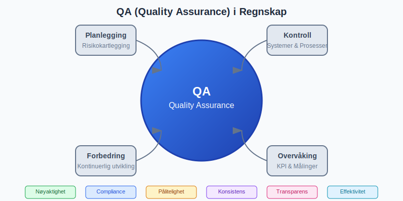
1.2 QA vs. QC (Quality Control)
Det er viktig å skille mellom QA og QC:
- Quality Assurance (QA): Forebyggende tiltak og systemorienterte prosesser
- Quality Control (QC): Deteksjonsbaserte kontroller og korrigerende tiltak
- Sammen: Skaper et helhetlig kvalitetssystem
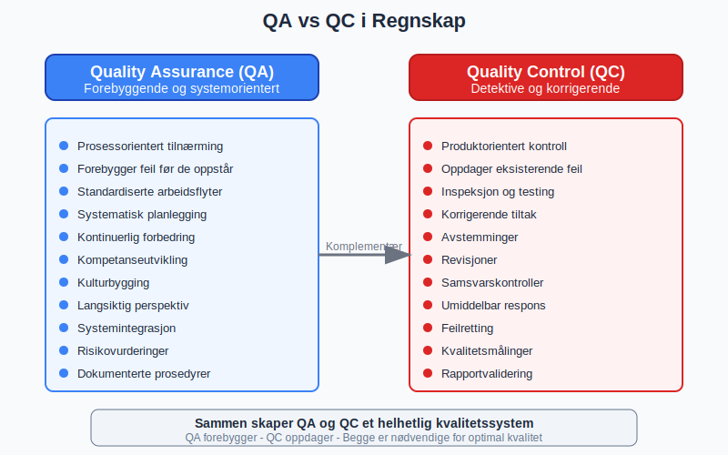
Seksjon 2: Komponenter i QA-systemet
2.1 Interne Kontroller
Internkontroll utgjør grunnmuren i QA:
- Segregering av arbeidsoppgaver
- Autorisasjonshierarkier og attestering
- Dokumentasjonskrav for alle transaksjoner
- Periodiske avstemminger og kontroller
2.2 Prosesstyring og Standardisering
Standardiserte prosesser sikrer konsistent kvalitet:
- Standardiserte arbeidsflyter for regnskapsføring
- Klare ansvarsfordelinger og roller
- Dokumenterte prosedyrer og rutiner
- Kvalitetsmanualer og retningslinjer
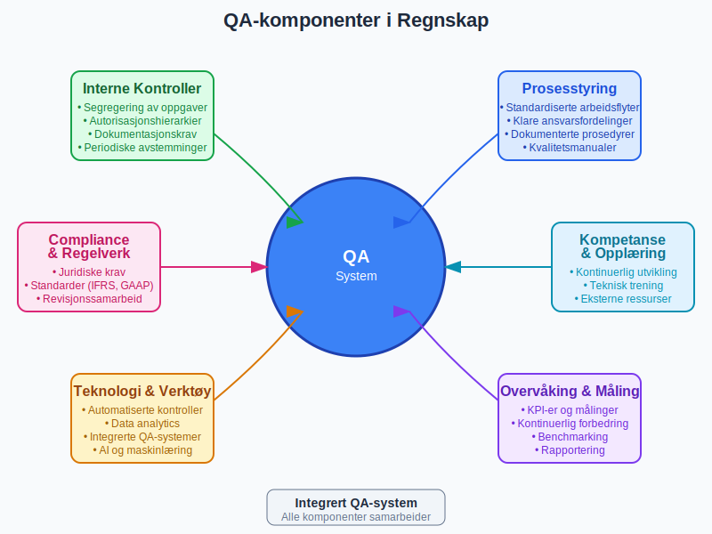
2.3 Kontrollpunkter og Milepæler
Strategisk plasserte kontrollpunkter sikrer kvalitet:
| Kontrollpunkt | Tidspunkt | Ansvarlig | Formål |
|---|---|---|---|
| Bilagsregistrering | Ved mottak | Regnskapsmedarbeider | Kontroll av fullstendighet |
| Månedsavslutning | Månedsslutt | Regnskapsansvarlig | Avstemming og kontroll |
| Kvartalsrapport | Kvartalsvis | Regnskapssjef | Analyser og nøkkeltall |
| Årsavslutning | Årsslutt | Autorisert regnskapsfører | Komplett gjennomgang |
Seksjon 3: QA-prosessen i Praksis
3.1 Planlegging og Risikovurdering
Effektiv QA starter med grundig planlegging:
- Identifikasjon av kritiske områder og risikoer
- Kartlegging av regnskapsprosesser
- Vurdering av eksisterende kontroller
- Prioritering av QA-tiltak
3.2 Implementering av Kontroller
Systematisk implementering sikrer dekning:
- Preventive kontroller: Forhindrer feil før de oppstår
- Detektive kontroller: Oppdager feil som har oppstått
- Korrigerende kontroller: Retter opp identifiserte feil
- Kompenserende kontroller: Erstatter manglende kontroller
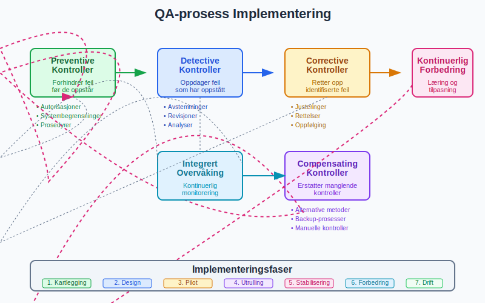
3.3 Overvåking og Oppfølging
Kontinuerlig overvåking sikrer effektivitet:
- Månedlige gjennomganger av nøkkeltall
- Kvartalsvise evalueringer av kontrolleffektivitet
- Årlige gjennomganger av QA-systemet
- Kontinuerlig forbedring basert på erfaringer
Seksjon 4: Digitale Verktøy og Teknologi
4.1 Automatiserte Kontroller
Moderne regnskapssystemer tilbyr omfattende QA-funksjoner:
- Automatisk avstemming av kontoer
- Regelhåndtering og validering
- Avviksrapportering i sanntid
- Workflow-styring og godkjenninger
4.2 Data Analytics og AI
Avanserte teknologier utvider QA-mulighetene:
- Kontinuerlig overvåking av transaksjoner
- Anomalidetekning ved hjelp av algoritmer
- Prediktiv analyse for risikostyring
- Intelligent rapportering og dashboards
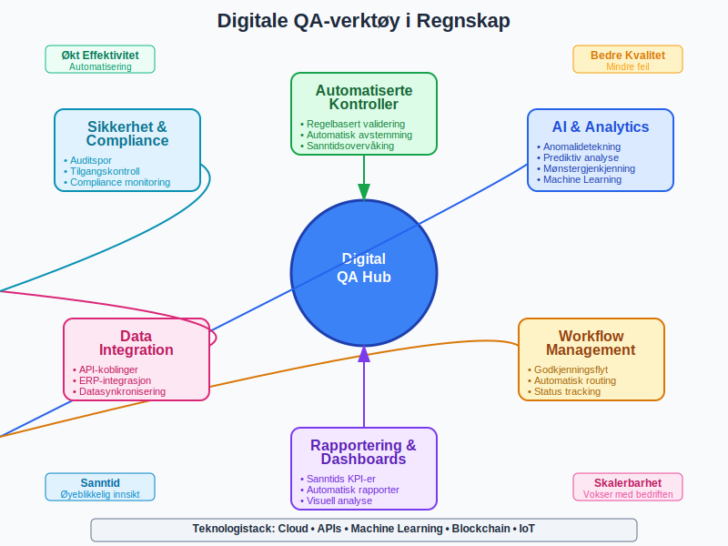
4.3 Integrerte QA-systemer
Helhetlige løsninger kombinerer flere funksjoner:
- ERP-integrerte kvalitetsmoduler
- Risikostyringsplattformer
- Compliance-verktøy
- Auditspor og dokumentasjon
Seksjon 5: Regelverk og Compliance
5.1 Juridiske Krav
QA må sikre overholdelse av relevante regelverk:
- Bokføringsloven og forskrifter
- Regnskapsloven og standarder
- Bransjespesifikke reguleringer
- Internasjonale standarder (IFRS, GAAP)
5.2 Revisjons- og Tilsynskrav
QA støtter eksterne kontroller:
- Revisjonssamarbeid og dokumentasjon
- Tilsynsmyndigheters krav og rapportering
- Skattemyndigheters kontroller
- Finanstilsynets reguleringer
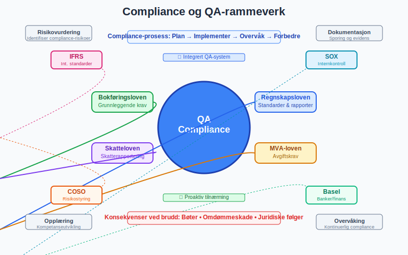
5.3 Internasjonale Standarder
For multinasjonale selskaper:
- SOX-compliance (Sarbanes-Oxley)
- IFRS-rapportering
- COSO-rammeverket
- ISO-standarder for kvalitetsstyring
Seksjon 6: QA-roller og Ansvarsområder
6.1 Organisering av QA-funksjonen
Effektiv QA krever klar ansvarsfordeling:
| Rolle | Ansvar | Kompetansekrav |
|---|---|---|
| QA-ansvarlig | Overordnet ansvar for kvalitetssystem | Regnskapsutdanning, QA-sertifisering |
| Regnskapsansvarlig | Daglig kvalitetskontroll | Autorisasjon, praktisk erfaring |
| Kontrollfunksjon | Uavhengig kontroll og testing | Revisjonsbakgrunn, analytiske ferdigheter |
| IT-ansvarlig | Systemkontroller og sikkerhet | IT-kompetanse, regnskapsforståelse |
6.2 Kompetanseutvikling
Kontinuerlig opplæring sikrer kvalitet:
- Regelmessig oppdatering på regelverk
- Teknisk trening på nye systemer
- Kvalitetsledelse og prosessforbedring
- Bransjespesifikk kompetanse
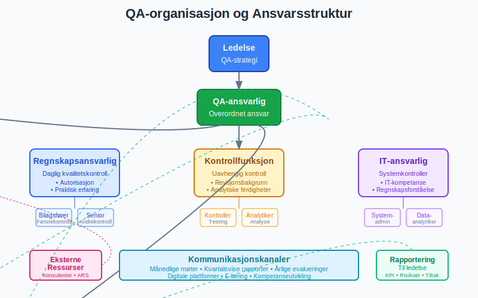
6.3 Eksterne Ressurser
Når intern kapasitet ikke strekker til:
- Konsulentbistand for spesialistområder
- Outsourcing av QA-funksjoner
- Samarbeid med autoriserte regnskapsførere
- Benchmarking mot beste praksis
Seksjon 7: Målinger og KPI-er
7.1 Kvalitetsindikatorer
Systematisk måling av QA-effektivitet:
- Feilfrekvens i regnskapsdata
- Avvikshåndtering og responstid
- Compliance-score og overholdelsesgrad
- Kunde-/bruker-tilfredshet
7.2 Finansielle Målinger
QA-investeringer må kunne rettferdiggjøres:
- Kostnader ved kvalitetsarbeid
- Besparelser fra feilreduksjon
- Risikokostnader og potensielle tap
- ROI på QA-investeringer
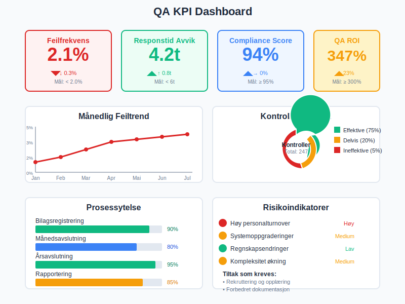
7.3 Kontinuerlig Forbedring
Brukar målinger til forbedring:
- Trend-analyser og utviklingsmønstre
- Root cause analysis av systemfeil
- Benchmark-studier mot andre organisasjoner
- Innovasjon og nye løsninger
Seksjon 8: Utfordringer og Løsninger
8.1 Vanlige QA-utfordringer
Organisasjoner møter typiske hindringer:
- Ressursmangel og tidsbegrensninger
- Teknologiske begrensninger og systemproblemer
- Kompetansegap og opplæringsbehov
- Kulturelle motstandskrefter mot endring
8.2 Løsningsstrategier
Praktiske tilnærminger til utfordringer:
- Prioritering av kritiske områder
- Automatisering av rutineoppgaver
- Kompetanseplanlegging og rekruttering
- Endrings-ledelse og kulturbygging
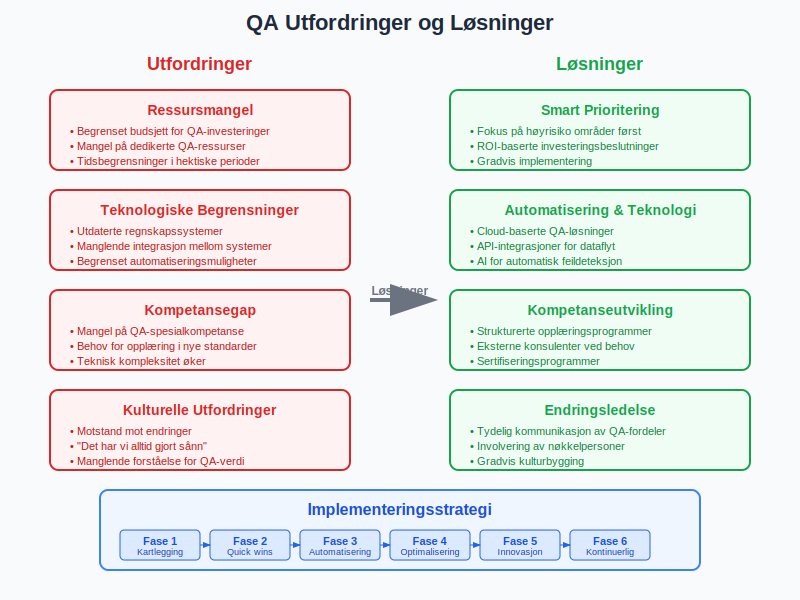
8.3 Risikostyring
QA som del av helhetlig risikostyring:
- Identifikasjon av operasjonelle risikoer
- Vurdering av sannsynlighet og konsekvenser
- Tiltak for risikoreduksjon
- Kontinuerlig overvåking av risikoutvikling
Seksjon 9: Bransjespesifikke Hensyn
9.1 Finansielle Institusjoner
Særlige krav for banker og forsikring:
- Basel-rammeverket og kapitaldekning
- Solvens-reguleringer
- Stresstesting og scenarioanalyser
- Rapportering til finansielle myndigheter
9.2 Børsnoterte Selskaper
Ekstra transparenskrav:
- Kvartalsrapportering og frister
- Investor relations og kommunikasjon
- SOX-compliance og internkontroll
- ESG-rapportering og bærekraft
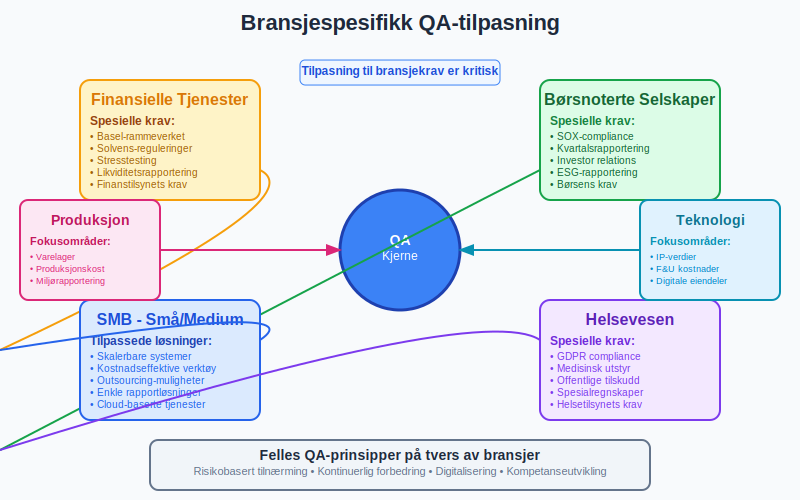
9.3 SMB-tilpasninger
QA for små og mellomstore bedrifter:
- Skalerbare løsninger og prosesser
- Kostnadseffektive verktøy og metoder
- Outsourcing-muligheter og partnerskaper
- Enkle rapporteringsløsninger
Seksjon 10: Fremtidens QA i Regnskap
10.1 Teknologiske Trender
Nye teknologier som påvirker QA:
- Kunstig intelligens og maskinlæring
- Blockchain og distributed ledgers
- Cloud-baserte løsninger og SaaS
- Mobile plattformer og sanntidsrapportering
10.2 Regulatoriske Utviklinger
Endringer i regelverk og standarder:
- Digitalisering av rapporteringskrav
- Sanntidsrapportering til myndigheter
- Økt fokus på cybersikkerhet
- Miljø- og bærekraft rapportering
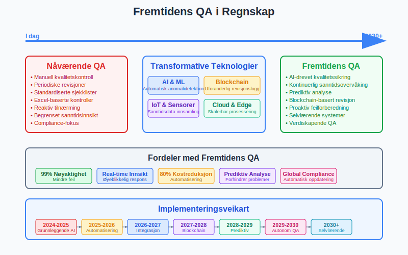
10.3 Nye Forretningsmodeller
QA tilpasser seg endrede behov:
- Subscription-baserte tjenester
- Platform-økonomi og digitale markeder
- Remote work og distribuerte team
- Agile metodikker og kontinuerlig levering
Seksjon 11: Implementering av QA-system
11.1 Faseinndeling
Strukturert tilnærming til implementering:
Fase 1: Kartlegging og Analyse
- Nåsituasjon-analyse
- Gap-identifikasjon
- Risikokartlegging
- Behovsanalyse
Fase 2: Design og Planlegging
- QA-systemdesign
- Prosessdokumentasjon
- Implementeringsplan
- Ressursallokering
Fase 3: Implementering
- Pilotprosjekter
- Gradvis utrulling
- Opplæring og endringsledelse
- Systemtesting
Fase 4: Stabilisering
- Overvåking og justering
- Kontinuerlig forbedring
- Erfaringsdeling
- Dokumentasjon av læring
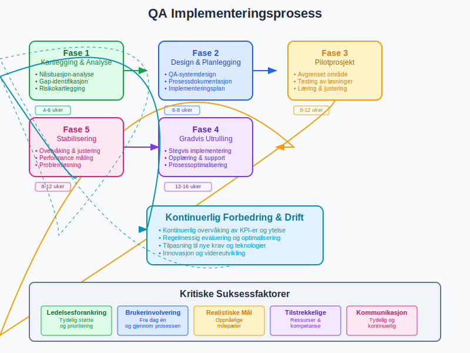
11.2 Suksessfaktorer
Kritiske elementer for vellykket implementering:
- Ledelsesforankring og støtte
- Brukerinvolvering fra start
- Realistiske tidsrammer og forventninger
- Tilstrekkelige ressurser og kompetanse
11.3 Vanlige Fallgruver
Hva man bør unngå:
- Overvurdere teknologiens rolle
- Undervurdere kulturelle utfordringer
- Mangelfull kommunikasjon og opplæring
- For ambisiøse mål i første fase
Konklusjon
QA (Quality Assurance) i regnskap er ikke bare en operasjonell nødvendighet, men en strategisk fordel som kan bidra til:
- Økt tillit fra interessenter og myndigheter
- Reduserte kostnader gjennom feilforebygging
- Bedre beslutningsgrunnlag basert på pålitelige data
- Styrket konkurranseevne gjennom effektive prosesser
En effektiv QA-tilnærming kombinerer:
- Systematiske prosesser og kontroller
- Moderne teknologi og verktøy
- Kompetente medarbeidere og klare ansvarsforhold
- Kontinuerlig forbedring og tilpasning
For å oppnå varig suksess med QA i regnskap, må organisasjoner fokusere på:
- Holistisk tilnærming som integrerer QA i alle prosesser
- Proaktiv holdning med fokus på forebygging fremfor reparasjon
- Fleksibilitet til å tilpasse seg endringer i regelverk og teknologi
- Målorientert arbeid med klare KPI-er og oppfølging
QA er en investering i organisasjonens troverdighet, effektivitet og fremtidige bærekraft. Ved å implementere robuste kvalitetssikringssystemer, legger organisasjoner grunnlaget for pålitelig finansiell rapportering og bedre internkontroll.
I en verden hvor digitalisering og automatisering endrer regnskapsbransjen, vil QA fortsette å være en kritisk suksessfaktor for organisasjoner som ønsker å opprettholde høy kvalitet og compliance i sin finansielle rapportering. Dette krever både teknologisk innovasjon og menneskelig ekspertise - en kombinasjon som vil definere fremtidens regnskapsføring.